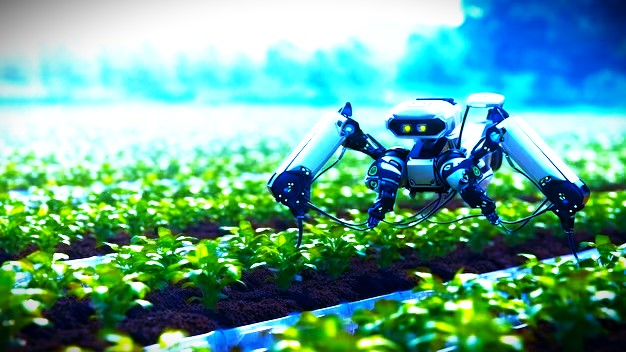

Welcome to AtonixCorp's Agriculture Technology Solutions
At AtonixCorp, we are dedicated to driving sustainability and efficiency in agriculture through our innovative technology solutions. Our goal is to empower farmers with the tools and insights they need to enhance productivity, optimize resource use, and promote sustainable farming practices.
What is Agriculture Technology?
Agriculture technology, or agtech, encompasses a wide range of technologies and solutions aimed at improving the efficiency and sustainability of agricultural practices. From precision farming tools to advanced data analytics, agtech innovations help farmers make informed decisions, reduce waste, and increase crop yields.
Our Agriculture Technology Solutions
At AtonixCorp, we offer a comprehensive suite of agriculture technology solutions designed to address the unique challenges faced by modern farmers:
1. Precision Irrigation:
precision irrigation systems utilize advanced sensors and IoT technology to monitor soil moisture levels in real-time. By providing precise data on when and where water is needed, our solutions help farmers optimize irrigation schedules, conserve water, and improve crop health. This leads to significant water savings and higher crop yields.
2. Fertigation Systems:
Fertigation is the process of delivering fertilizers through irrigation systems. Our fertigation solutions integrate seamlessly with our precision irrigation technology, ensuring that nutrients are delivered efficiently and accurately to crops. This not only enhances nutrient uptake and crop growth but also reduces fertilizer runoff and environmental impact.
3. Solar-Powered Solutions:
We are committed to promoting renewable energy in agriculture. Our solar-powered irrigation and monitoring systems provide a sustainable and cost-effective alternative to traditional energy sources. By harnessing the power of the sun, farmers can reduce their energy costs and carbon footprint while maintaining reliable operations.
4. Crop Monitoring and Analytics:
Our advanced crop monitoring solutions utilize drones, satellites, and ground-based sensors to collect data on crop health, growth patterns, and pest activity. This data is analyzed using AI and machine learning algorithms to provide actionable insights. Farmers can use these insights to make informed decisions about planting, harvesting, and pest management, leading to improved crop yields and reduced losses.
5. Sustainable Farming Practices:
AtonixCorp is dedicated to promoting sustainable farming practices. Our technology solutions support practices such as conservation tillage, cover cropping, and integrated pest management. By adopting these practices, farmers can improve soil health, reduce erosion, and minimize the use of chemical inputs, contributing to a healthier and more sustainable agricultural ecosystem.
"At AtonixCorp, we’re not just about providing services; we’re about making a meaningful impact. Join us in exploring our comprehensive solutions and see how we can work together to achieve excellence and innovation."


© 2024 AtonixCorp